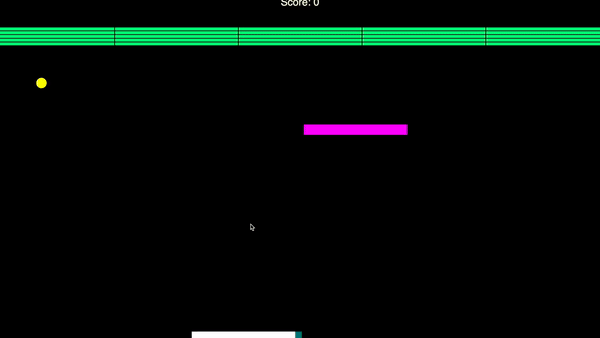
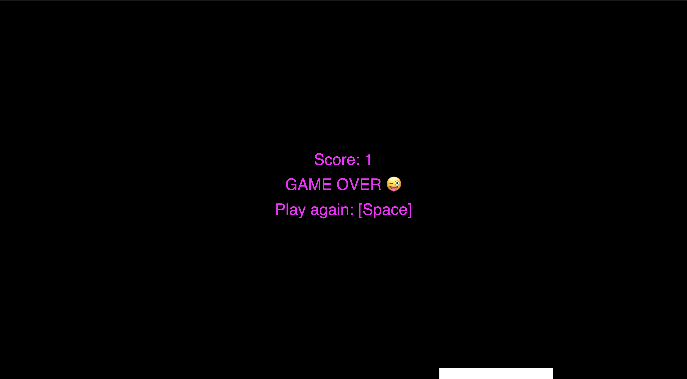
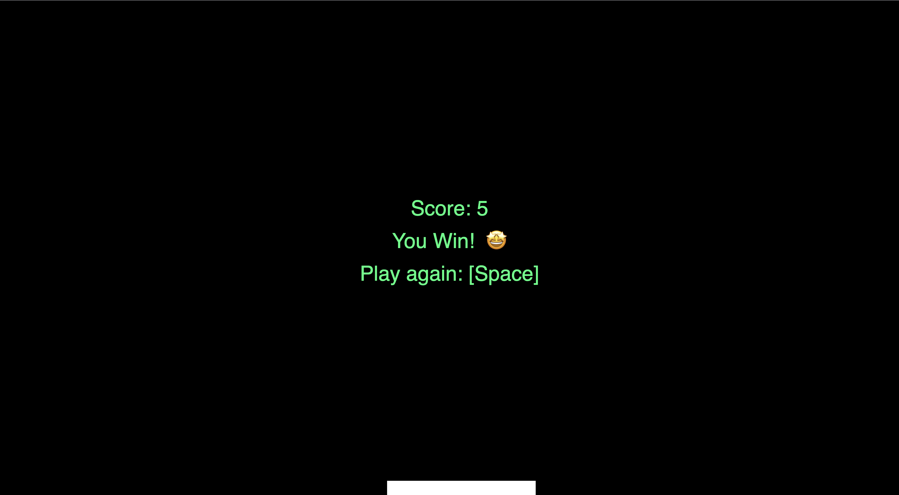

Projects
PlayBrosski!
MP3 - Atari Breakout Game
Overview
I made a simple game based on Atari Breakout that can be found here!
The Development Process
Before I began brainstorming the types of games I wanted to make,
I looked into how to set up my own web development toolchain since
I wanted to build and deploy it to be free to play on the web.
Afterwards, my game development involves the following:
-
Brainstorming what kind of game I wanted to create. Here's the games that I got inspiration from:
- Pong
- Peggle
- Atari Breakout
-
Deciding on what external JS libraries to help build my game:
- The Game engines I was looking at were:
- p5.play: ultmately p5.play was my choice due to the fact that it incorporates p5.js to render graphics
- pixi.js
- Game Implementation involved utilizing existing p5.js Pong and Breakout games as a scaffold for my game.
- Adjusting window screen size to improve overall experience with the game.
-
Incorporating sprites from p5.play to my game in the mouse-controlled paddle:
-
Implement 2nd paddle (meant to be for the computer)

Issue Deep Dive
An issue that came up with this project was in my beginning stage of game development. After I went through how I had to build and deploy the game project and the p5 sketches I took inspuiration from, I decided to use an Atari Breakout example as my scaffold to build my game. I encountered the issue of drawing shapes and creating sprites to be difficult, especially on a p5 canvas with small dimensions. My temporary quick fix for this issue was to establish set canvas dimensions that are as large as it should be without compromising overall gaming experience. Since this is just a temporary fix, I would need to work on investigating how I can make it so that my game's resolution is maintained in various screen sizes.
Looking forward
I aim to continuing iterating on the following for this project:
- Improve on my 2ndary paddle (right now it's not doing much)
- Add moving bricks to hit
- Add some audio to Game Over and You Win screens  